SEGA Genesis
"Genesis Does What Nintendon't: Unleashing Gaming Greatness Since 1989"

Description
The Sega Genesis, released in 1989, stands as a pioneering force in the world of video gaming, earning its place as an iconic console that shaped an era. Known for its cutting-edge technology, diverse game library, and the birth of legendary franchises, the Sega Genesis remains a cherished relic among gaming enthusiasts. Sega Genesis introduced 16-bit gaming, delivering superior graphics and audio for an immersive gaming experience. From Sonic the Hedgehog's lightning-speed adventures to Streets of Rage's thrilling beat 'em up action, the Genesis boasted a lineup that defined a generation.
Buy Now 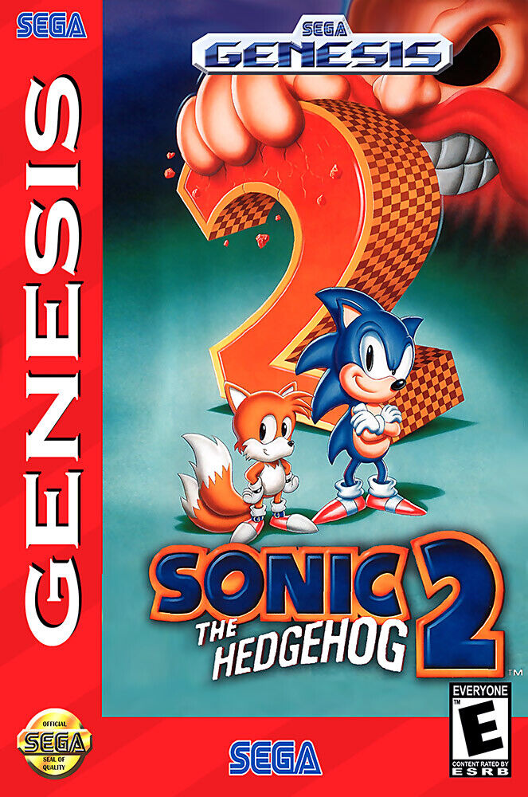
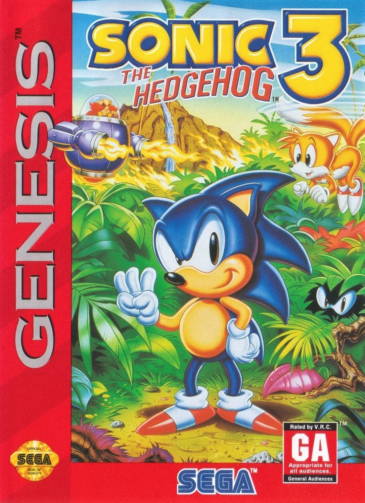
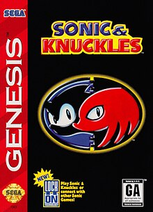
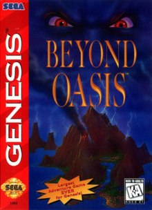
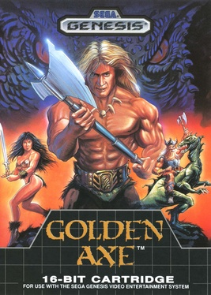
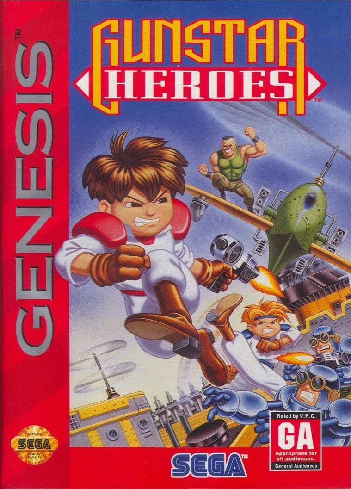
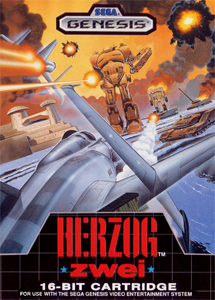
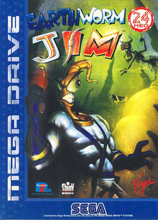
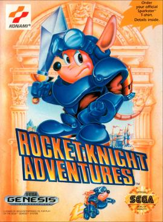
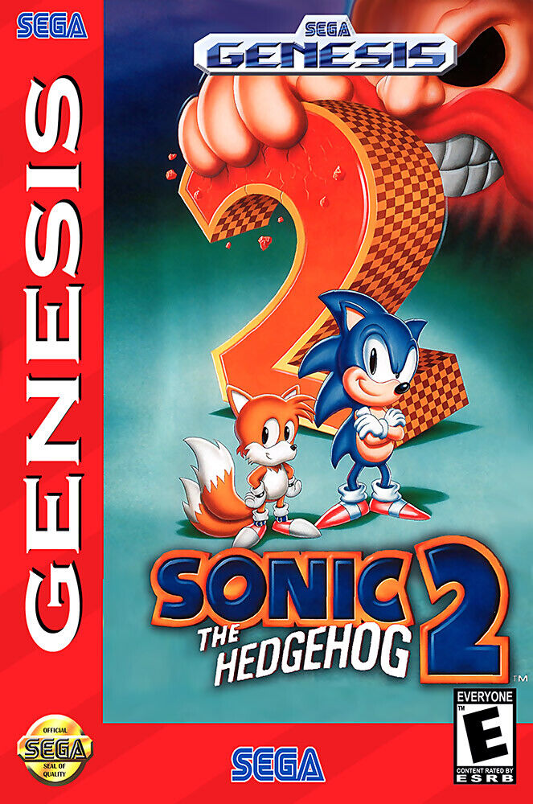
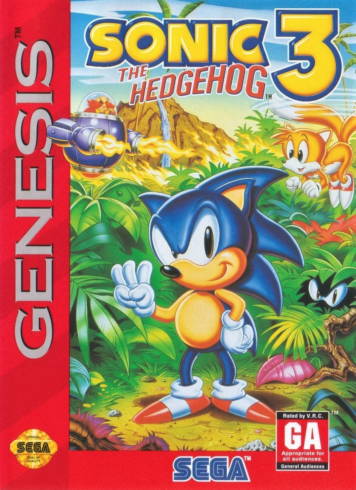
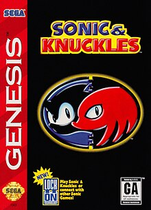
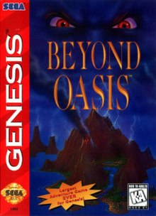
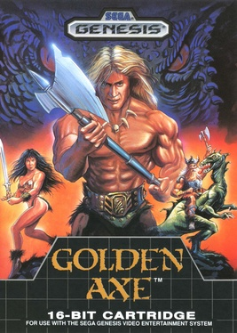
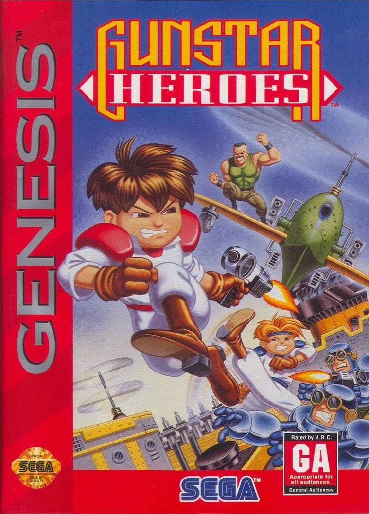
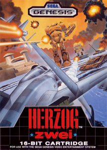
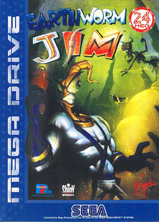
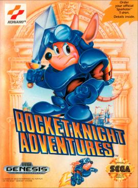
 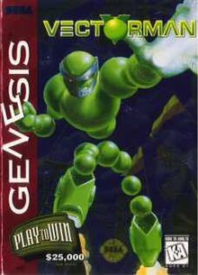
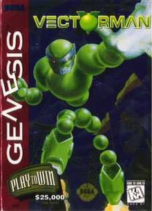